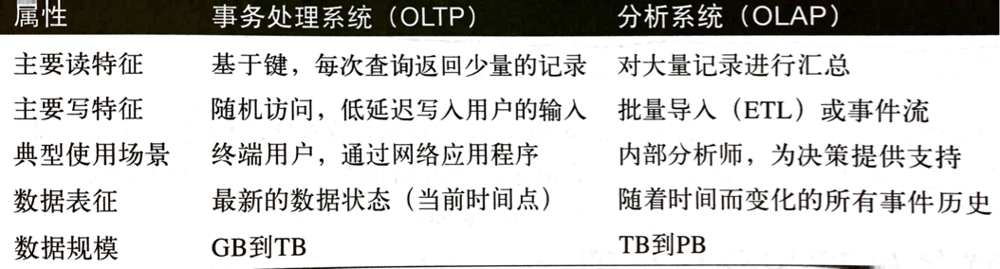
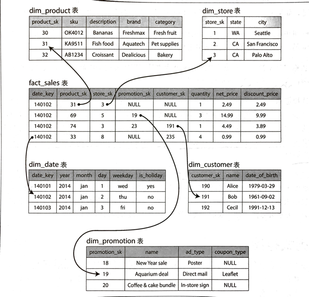
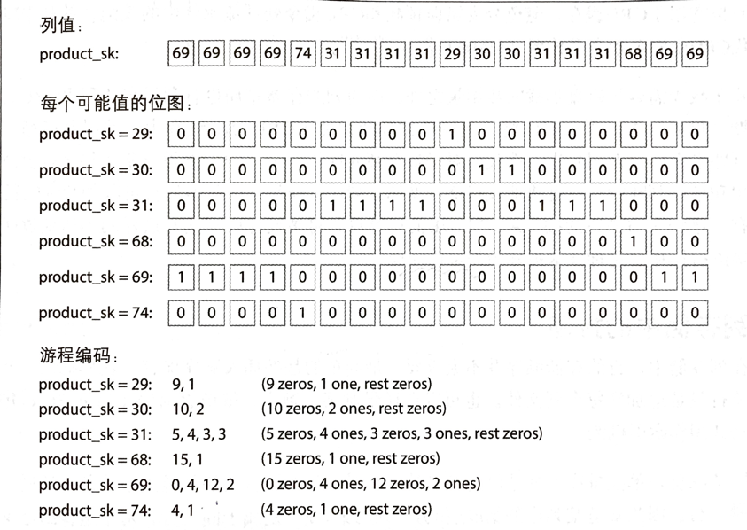
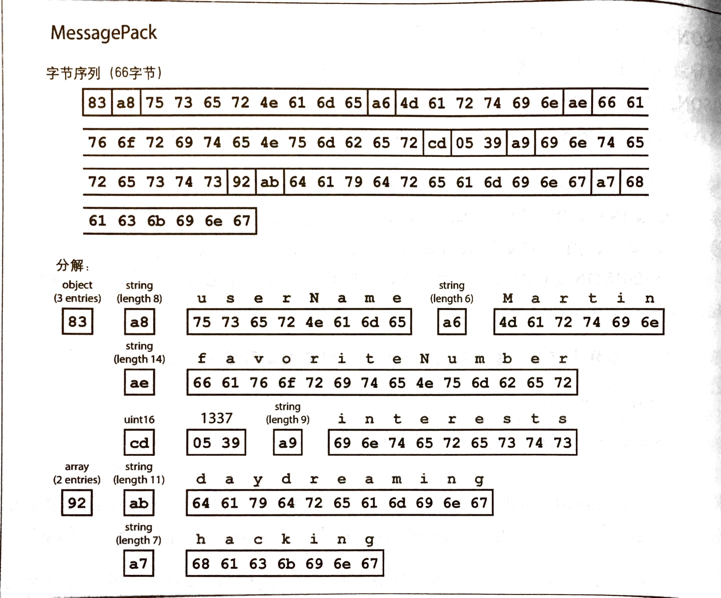
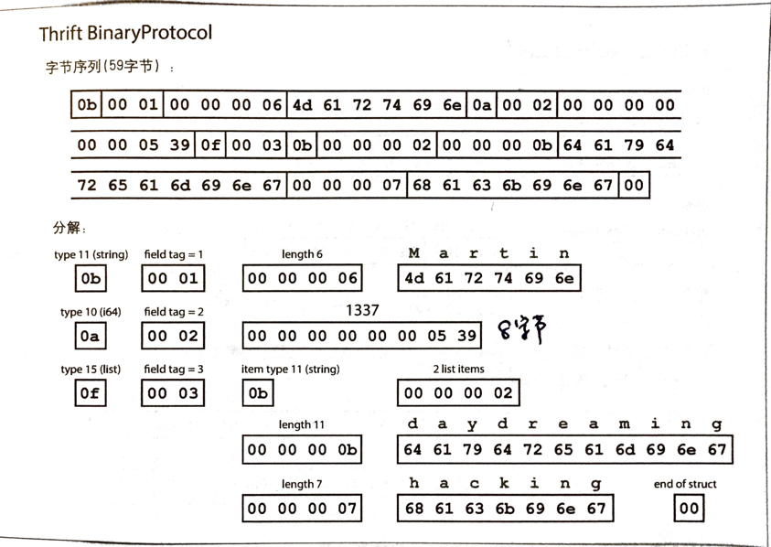
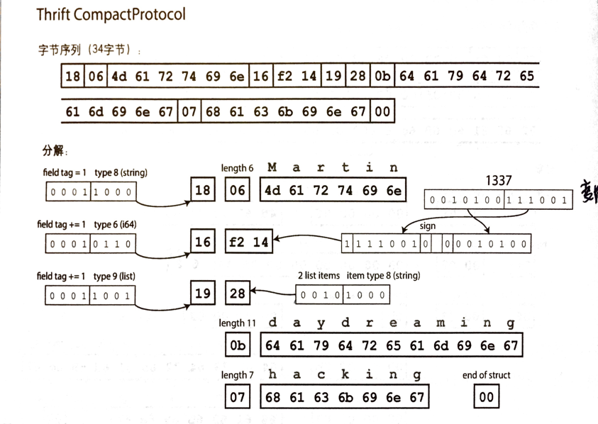
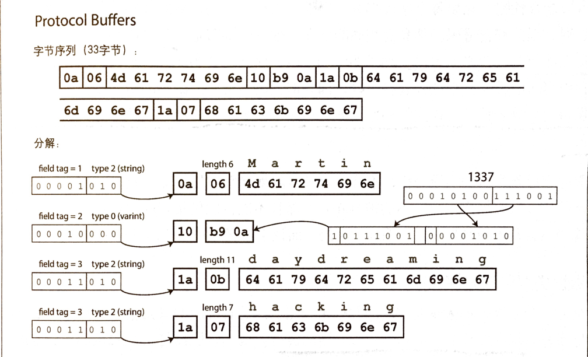
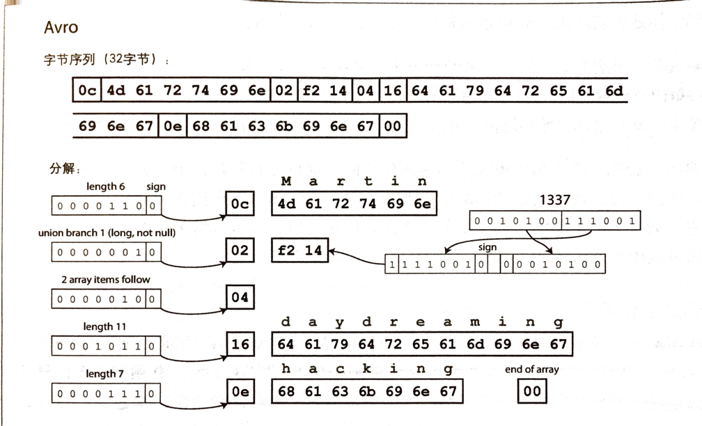

引言
《数据密集型应用系统设计》（Design Data-Intensive Applications）是一本非常有诚意、非常优秀的讲解针对数据密集场景下系统设计相关的目标、原则和技术选型等知识。作者结合理论与实践，为我们展现了一些技术的发展趋势以及它们之间的对比；同时还介绍了一些关键技术（如存储引擎、序列化协议、分布式一致性）等的实现原理，让我们能够知其然，更知其所以然。
好书自然要精读细品，写点读书笔记才能把握自己的学习进度和理解程度。总的来说，笔记形式将以图文为主，思维导图为辅的方式来呈现。由于该书的封面是一头野猪🐗，故将本系列读书笔记命名为《野猪书读书笔记》。
书中主要分为三个部分展开：
- 讨论有关增强数据密集型应用系统所需要的若干基本原则。
- 从单机数据存储专享跨机器的分布式系统。
- 主要针对派生数据的系统设计，并讨论批处理和流式处理。
野猪书学习完成后，可以考虑如下深入学习路线：
- 关系型数据库：
- MySQL
- 存储引擎（InnoDB & MyISAM）
- 分布式数据库：
- 一致性协议（Paxos, Raft, Zookeeper）
- 数据库（TiDB ）
- 存储引擎（TiKV & RocksDB & LevelDB）
- 非关系数据库或缓存系统：
- Redis（设计思想、数据结构、集群管理）
- HBase（设计思想、使用方式和场景、存储管理）
- 消息队列系统：
- 应用层框架（Celery）
- AMQP 协议实现的消息队列服务（RabbitMQ）
- 简易的消息队列服务（Beanstalk）
- 高吞吐量的消息队列服务（RocksDB、Kafka）
- 搜索引擎：ElasticSearch
可靠、可扩展与可维护的应用系统
- 数据密集型（Data-Intensive）是指对于一个应用系统而言，「数据」是其成败的决定性因素，包括数据的规模、数据的复杂度或数据产生和变化的速率等。
- 计算密集型（Compute-Intensive），以计算为主的系统，CPU 主频通常是它的制约瓶颈
- 数据系统：
- 通常来说，数据库、缓存、消息队列被认为是不同类型的系统，有不同的性能和设计实现；
- 但近年来，技术的发展导致它们之间的界限逐渐模糊。比如 Redis 既可以存储，也可以做消息队列；Kafka 可以做消息队列，也具备持久化的能力。因此，统一称为「数据系统（data system）」；
- 应用系统的需求更加广泛，单一组件无法满足所有的数据处理和存储需求；通常需要组合多个组件，并通过应用层代码驱动实现衔接。
可靠性（Reliability）
- 目标：当意外情况（包括硬件、软件故障以及人为失误）发生时，系统应该可以继续正常工作。虽然性能会有所降低，但会确保功能正确。
- 可能出错的事称为错误（faults）或故障，系统可应对错误，则称为容错（fault-tolerant）或者**弹性（resilient）。
- 失效（failure）比 fault 严重，意味着整个系统无法对外提供用户所需服务。
- 硬件故障问题可以通过增加冗余的方式来有效解决，但为了提高可用性，软件容错的方式也可以用来容忍多机失效的手段，作为硬件容错的补充。
- 软件故障问题通常难以预料，且一旦发生产生的影响会非常广泛，横跨整个系统都可能。并无快速解决之法。在使用之处，需要考虑好很多细节，梳理依赖假设和系统间的交互。另外，进行全面测试，做好进程隔离，允许崩溃后自动重启。
- 保证系统可靠性，减少人为失误：
- 以最小出错的方式设计系统
- 想办法分离最容易出错的地方、容易发生故障的接口
- 充分地测试
- 当发生人为失误时，提供快速恢复机制，减少故障影响
- 提供详细清晰的子系统，包括性能指标和错误率
- 推行管理流程并加以培训
可扩展性（Scalability）
- 目标：随着规模增长（包括数据量、流量或者复杂度），系统应用能以合理的方式匹配这种增长。
- 用来描述系统应对负载增加能力的术语。
- 描述负载：需要知道什么是负载参数。参数的最佳选择取决于系统的体系结构，可能是 Web 服务的每秒请求量，数据库写入比例，聊天室活动人数，缓存命中率，用户关注者分布情况等。
- 描述性能：
- 批处理系统关注的是吞吐量（throughout）
- Web 服务器更关注请求响应时间，更经常关注的是平均响应时间
- 中位数响应时间通常也叫 p50
- 常见的还会关注 p95, p99, p999 值
- 服务质量目标 Service Level Objectives, SLO
- 服务质量协议 Service Level Agreements, SLA
可维护性（Maintainability）
- 目标：随着时间的推移，新的人员参与到系统的开发和运维，以维护现有功能或适配新场景，系统都应该高效运转。
- 谁都不情愿维护遗留系统，为什么呢？因为可能要修复别人埋下的坑，做不喜欢的事情。所以在做系统设计之初，就应该关注系统设计的三大原则，尽可能减少维护期的麻烦：
- 可运维性：运维更轻松
- 简单性：简化系统复杂度，但并非减少产品功能。可以通过较好的抽象来让系统变得更清晰和易于理解
- 可演化性：易于改变
数据模型和查询语言
- 复杂的应用程序会有很多层，但核心思想是：每层都通过提供一个简洁的数据模型来隐藏下层的复杂性
关系数据库和文档数据库
NoSQL 数据库几大驱动因素：
- 比关系数据库扩展性好，支持超大数据集或超高写入吞吐量
- 开源免费居多
- 关系模型不能很好支持某些特定查询
任何对人类有意义的东西都可能在将来某个时刻发生改变。所以在数据库中我们使用关联的 ID 作为标志的好处就是它没有直接意义，永远不需要直接改变
层次模型：
- 代表是 IBM 的 Information Mangagement System, IMS
- 类似 JSON 结构，能够很好表示一对多关系；多对多关系很难表示
网络模型：
- 层次模型的推广，支持多对一和多对多的关系
- 查询困难、更新复杂且不够灵活
- 对应用程序的数据模型进行更改是非常困难的事情
- 应用需要关心复杂的访问路径
关系模型：
- 定义了所有数据的格式：关系（表）只是元组（行）的集合
- 查询优化器可以自动决定查询顺序执行；使用何种索引。相当于自动维护「访问路径」
- 应用添加新功能变得容易
关系数据库和文档数据库：
- 表示多对一和多对多都使用了标识符
- 前者叫作外键（或者可以在应用中关联）；后者叫作文档引用
读时模式：文档数据库中，数据结构是隐式的，只有在读取时才解释
- 写时模式：关系数据库中，模式是显式的，数据库保证写入时遵循模式
- 融合关系模型和文档模型是未来发展的一个较好的途径
查询语言
SQL：
- 声明式
- 简洁、易使用
- 很多限制的事实，也成为数据库自动优化提供了空间
- 底层易于使用并发查询
IMS/CODASYL（层次模型、网络模型）：
- 命令式
MapReduce：
- 一种编程模型，用于在许多机器上批量处理海量数据
- 既非声明式，也非完全命令式；介于二者之间
- 底层编程模型，用于在计算集群上分布执行；可执行的操作限定为纯函数
图数据库模型
- 关系数据库适合处理简单的多对多模型；但随着数据之间的关联越来越复杂，转换为图模型会更加自然
- 顶点和边组成
- 建模示例：
- 人际关系
- Web 网页
- 公路或者铁路网
- 更强大用处：提供了单个数据存储区保存完全不同类型对象的一致性方式
属性图模型（Property Graph）
- 代表：Neo4j, Titan, InfiniteGraph
顶点（vertice）：
- 唯一标志
- 出边集合
- 入边集合
- 属性集合
边（edge）：
- 唯一标志
- 边开始顶点
- 边结束的顶点
- 标签
- 属性集合
三元图存储模型（Triplestore）
- 代表：Datomic, AllegroGraph
- 几乎等同于属性图模型，可能作为构建应用程序的补充
- 形式：(主体，谓语，客体)
- 主体相当于图中的顶点，客体则是以下两种之一：
- 原始数据类型中的值（字符串或数字），如
(lucy, age, 40) - 图的另外一个顶点，如
(lucy, mariedTo, alain)
- 原始数据类型中的值（字符串或数字），如
查询语言
- Cypher，最早用于 Neo4j。声明式查询语言
- SQL:1999 标准后，可以使用递归公用表达式（WITH RECURSIVE）来表示可变的遍历路径查询
- SPARQL：采用 RDF 数据模型的三元存储查询语言
- Datalog：数据模型采用「谓语（主体，客体）」模式；规则可以在不同的查询中组合和复用；对于简单查询虽然繁琐，但针对复杂数据，则更加灵活
数据存储和检索
数据库核心：数据结构
- 索引可以帮助高效地查询数据库中特定的键；是基于原始数据派生而来的额外数据结构
- 任何类型的索引通常都会降低写的速度
哈希索引
- 以 Bitcast 为代表的存储引擎，采用了哈希索引
- 适合每个键的值更新频繁的场景
- 哈希索引的特点：
- 哈希表必须全部存放在内存中，键值指向的是文件段中的偏移，用于查找具体的数据
- 可采用分段的思想，再配合后台合并、压缩等手段来避免磁盘写入耗尽的问题，减少磁盘碎片
- 新的数据采用追加而非原地修改的策略，提高写入吞吐量
- 区间查询效率不高
SSTables 和 LSM-Tree
- SSTable 的全称：Sorted String Table，排序字符串表
- LSM-Tree 的全称：Log-Structured Merge-Tree
相比哈希索引的优点：
- 合并段更简单高效，对于大文件也是如此
- 段文件中的 key-value 顺序是按照键排序过的，便于合并和查找
- 在文件中查找特定键时无需在内存中保存所有键的索引（稀疏索引放在内存中）
- 支持范围查找
构建和维护 SSTables
- 在内存中维护一个内存表，写入时先写入该表（有序的数据结构，如红黑树或者跳表）
- 内存表超过一定阈值时，直接写盘，形成 SSTable；在写盘同时，可添加新的内存表实例，接收后续写请求
- 对于读请求，内存表->最新磁盘段文件->次新段文件->…直到找到目标或者为空
- 后台定期合并、压缩，丢弃被覆盖或删除的值
- 避免崩溃的方式：每个写入记录到日志，当内存表写入 SSTable 后才可以丢弃相应日志
- 基于合并和压缩排序文件原理的存储引擎通常都叫作 LSM 存储引擎
- 性能优化：
- 分层压缩，LevelDB & RocksDB
- 按大小分级，HBase, Cassandra 则两种都支持
- 布隆过滤器
B-Trees
- 广泛使用认可的索引结构，很多数据库中标准索引实现；即使在非关系数据库中也有用到
- B-Tree 是面向块或者页进行设计的，它将数据库分解成固定大小的块或页，一般为 4 KB，页是内部读写的最小单元
- 每个页面都有标识符，可被引用
- 一个页所包含的页面引用数量称为分支因子
更新策略：
- 搜索包含指定键的子页
- 修改该页的值
- 整页回写到磁盘（相当于覆盖原先的页，对该页的任何引用依然有效）
新加键策略：
- 找到可容纳新键范围的页，然后添加到该页
- 若页面空间不足，则将其分裂为两个半满的页，同时修改父页，记录分裂后的新的键的范围
一个具有 N 个键的 B-Tree 的深度为 O(log N)；多数数据库可以适合 3~4 层 B-Tree。分支因子为 500 的 4KB 四级树可存储 256TB 的数据
- 崩溃恢复：WAL, Write-Ahead Log。通过该日志来恢复
- 需要考虑并发控制
- 写放大的问题（页分裂）
- 事务支持更加容易
事务处理（OLTP）和分析处理（OLAP）
- 二者对比：
 - 大的企业会单独建立数仓，同步来自 OLTP 系统的数据，在单独的数仓中进行分析处理，不会影响线上业务
- 导入数仓：ELT, Extract->Transform->Load

- 常见数仓系统：Apache Hive, Spark SQL, Cloudera Implala
星型与雪花型分析模式
- 常见的是星型模式，也称为维度建模。特点是有一个事实表，关联了很多个维度表。事实表本身可能会很庞大，其中的每一行都代表一个事件，维度通常代表事件的Who, What, Where, When, How, Why
 - 雪花❄️ 模型是星型模型的变体，它将维度进一步细分为子空间，从而更加规范化。但是这个会增加分析查询的复杂度，所以星型分析模式更受欢迎
列存储
- 数仓中的列通常很宽，有的可能多达 100 个
- 核心思想是将每列中的所有值存储在一起，所有的数据时存储在一组列文件中，每个文件都以相同顺序保存数据行
列压缩：
- 很容易进行压缩
- 常用位图编码，并配合游程编码降低存储空间（这个主要是针对零位稀疏的情况）

列排序：
- 可以根据查询需求选择排序的列
- 排序可帮助进一步压缩（重复值也可以采用简单的游程编码，所以即便是数十亿行也不怕）
- 基于第一个排序键的压缩效果通常最好
- 排序类似于关系数据库中用的索引，方便查询
- 写入可以采取类似 LSM-Tree 的思路
- 物化视图：查询结果的实际副本，被写入到磁盘了；虚拟视图则是用于编写查询的快捷方式
数据编码与演化
数据编码格式
- 程序中至少有两种常用的数据表示形式：
- 内存中，数据保存在对象、结构体、列表、数组、哈希表和树等结构中，对于 CPU 的高效访问和操作做了优化
- 数据写入文件或者网络传输时，需要进行编码为字节序列
语言特定的格式
- 常见的包括：
- java.io.Serializable
- Ruby 中的 Marshal
- Python 中的 pickle
- 优点：对于某种语言自身来说，编解码会很方便，不需要引入第三方依赖
- 缺点：
- 与特定语言绑定，不利于和其它语言的异构系统通讯
- 可能会有安全性问题
- 兼容性不能保证
- 效率通常比较低，需要花费较多的 CPU 时间或者内存空间
JSON、XML 和二进制变体
- JSON、CSV、XML 都是文本格式，可读性较好
存在的问题：
- 数字编码不明确（比如 CSV 中就无法区分是数字还是数字组成的字符串；JSON 中对于大于 2^53 的整数就傻眼了）
- 不支持二进制（虽然可以用 base64 搞事情，但是会增加空间和编解码的时间）
- CSV 无任何模式
- XML 和 JSON 均有可选的模式
一些变种，它们的应用并不是很广泛：
- JSON（BSON、BJSON、UBJSON、BISON、Smile 和 Message Pack）
- XML（WBXML 和 Fast Infoset）
后面的🌰都以表达下面的信息为例，来做对照：
1
2
3
4
5{
"userName": "Martin",
"favoriteNumber": 1337,
"interests": ["daydreaming", "hacking"]
}Message Pack 是 JSON 的二进制编码，示例如下：

Thrift & Protocol Buffers
- Thrift 是 Facebook 开发，2007~2008 年开源
- Thrift 是一个比较完整的 RPC 框架，在它的协议层提供了多种 Protocol 的实现，方便应付多种场景。比如常见的
BinaryProtocol和CompactProtocol。 BinaryProtocol 编码示例：
- 与 Message Pack 编码相比，没有了字段名
- 使用了 field tag 来映射 IDL 定义的各个字段

CompactProtocol 编码示例：
- field tag 和 type 使用一个字节表示
- field tag 使用了偏移计算
- 整数采用变长字节，而非 BinaryProtocol 中 1337 使用的 8 字节，换成变长字节只需要 2 字节即可

Protocol Buffers Google 开发，2007~2008 年开源
使用 PB 编码的示例：
required和optional这种修饰是不会体现在编码中的，而是在运行时做的检查- 保证前后向兼容：
- field tag 至关重要，不可随便更改
- optional 字段的 field tag 可以删除，但不要复用已删除的 field tag
- 新增字段必须是 optional 或者带有默认值，保证向后兼容
- 不可轻易修改 field 类型
Avro
- Apache Avro 是 Hadoop 的子项目，提供了两种模式语言：Avro IDL 和 JSON 格式
特点：
- 没有标签号
- 编码非常紧凑
- 编码中没有字段类型
编码示例：
区分读模式和写模式。写模式和读模式不必完全一模一样，只需要保持兼容
- 写模式和读模式中的字段顺序可不同，因为在模式解析时会使用字段名匹配
- 动态生成模式是最大的特点，不需要像 PB 或者 Thrift 中那样，显式分配 field tag，比较灵活。特别适合编码数据库表。